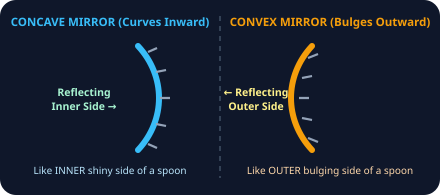

Did You Know? #1 (Side-View Warning)
Did You Know? #1 (Side-View Warning)
 1. Plane, Concave & Convex Spherical Mirrors
1. Plane, Concave & Convex Spherical Mirrors
- ✓Plane Mirror: Always forms an erect, same-size, laterally inverted image.
- ✓Concave Mirror: Reflecting surface curves inward (reflective aluminium coating on the outer side — like inner side of a shiny spoon).
- ✓Convex Mirror: Reflecting surface bulges outward (coating on the inner side — like outer side of a spoon).
- ✓Walking Toward a Concave Mirror: Far away → inverted & diminished; walking closer → inverted image grows larger, then suddenly flips erect & magnified very close!

Concave (Inner Curve) vs Convex (Outer Bulge)
 2. Real-World Uses of Concave & Convex Mirrors
2. Real-World Uses of Concave & Convex Mirrors 3. Laws of Reflection & CHS Angle Calculator
3. Laws of Reflection & CHS Angle Calculator 6. Interactive Mirror & Lens Image Predictor Lab
6. Interactive Mirror & Lens Image Predictor Lab Did You Know? #2 (Bhaskara II — 800+ Years Ago!)
Did You Know? #2 (Bhaskara II — 800+ Years Ago!) 8. CHS Master Comparison: Mirrors vs Lenses
8. CHS Master Comparison: Mirrors vs Lenses Quick Revision
Quick Revision